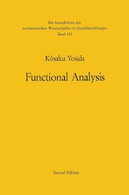
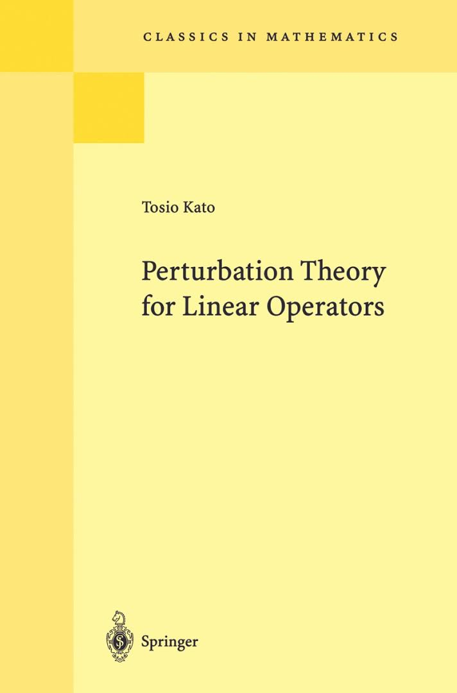
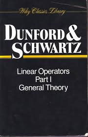
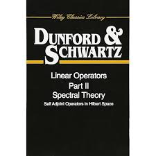
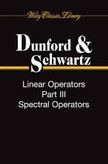

Impressum
Responsible for these webpages:
Klaus Höflinger, Beethovenstraße 11; 73117 Wangen (Germany)
Email contact: khoeflinger@t-online.de
Key Concepts in Operator and Spectral Theory
Sitemap
- Home
- Lecture Notes
- Research Articles
- Dunford & Schwartz: Linear Operators I-III
- Reed & Simon: Methods of Modern Math. Physics I-IV
- Kato: Perturbation Theory of Linear Operators
- Rudin's Books on Mathematical Analysis
- Yosida: Functional Analysis
- Riesz & Sz.-Nagy: Functional Analysis
- Key Concepts in Operator and Spectral Theory
- About me
- Impressum
- Sitemap
- Table of Contents
- 1. Banach and Hilbert Spaces
- 2. Basic Theory of Linear Operators
- 3. Adjoint Spaces and Operators
- 4. Resolvent and Spectrum
- 5. Normally Solvable Operators
- 6. Symmetry and Self-Adjointness
- 7. Spectral Theory of Self-Adjoint Operators
- 8. Operators with Pure Point Spectrum
- 9. Infinitesimal Generators of Semigroups
- 10. Accretive Operators
- 11. Sectorial Operators and Analytic Semigroups
- 12. Applications to Linear Differential Operators
Welcome to this web-page!
These pages serve as a review on the theory of linear operators acting in complex Banach or Hilbert spaces and their spectral properties. The subject itself belongs to the mathematical area of functional analysis and has many useful applications, especially to linear partial differential operators of elliptic and parabolic type and their associated boundary and initial value problems.By use of spectral theory one can study resonance phenomena appearing in mathematical physics and engineering science. Here we are led to so-called eigenvalue problems, that is, equations of the form \(A u = \lambda u\) with \(A\) being a linear-elliptic partial differential operator, where the question arises, for which complex parameters \(\lambda \in \mathbb{C}\) this equation has non-trivial solutions. But spectral theory also forms the foundation for semigroup theory, which is a decicional tool to solve evolution equations of the form \(\dot{u} + A u = f\) and \(\ddot{u} + A u = f\), respectively.
I wrote this treatise in honour of Prof. Dr. P. Werner (1932-2018), who conveyed my fascination of these beautiful mathematical topics by his lessons hold in 1984 and 1985 at Mathematical Institute A of University Stuttgart.
About me
I wrote this treatise in honour of Prof. Dr. Peter Werner (1932-2018), who conveyed my fascination of these beautiful mathematical topics by his lessons hold in 1984 and 1985 at Mathematical Institute A of University Stuttgart.
Table of Contents
- Banach and Hilbert Spaces
- Basic Theory of Linear Operators
- Adjoint Spaces and Operators
- Resolvent and Spectrum
- Normally Solvable Operators
- Symmetry and Self-Adjointness
- Spectral Theory of Self-Adjoint Operators
- Operators with Pure Point Spectrum
- Infinitesimal Generators of Semigroups
- Accretive Operators
- Sectorial Operators and Analytic Semigroups
- Applications to Linear Differential Operators
Here is the link to the whole document (in pdf-format): Linear Operators and Spectral Theory.
1. Banach and Hilbert Spaces
2. Basic Theory of Linear Operators
3. Adjoint Spaces and Operators
4. Resolvent and Spectrum
5. Normally Solvable Operators
6. Symmetry and Self-Adjointness
7. Spectral Theory of Self-Adjoint Operators
8. Operators with Pure Point Spectrum
9. Infinitesimal Generators of Semigroups
10. Accretive Operators
11. Sectorial Operators and Analytic Semigroups
12. Applications to Linear Differential Operators
Research Articles
- Estimates and Existence Theorems for Elliptic Boundary Value Problems; by F.E. Browder, 1959.
F. Riesz & B. Szőkefalvi-Nagy: Functional Analysis
This is one of the first monographs on functional analysis and was published in the fifties. The book contains a good presentation of the spectral decomposition of normal rsp. self-adjoint linear operators in Hilbert space.- Part One: MODERN THEORIES OF DIFFERENTIATION AND INTEGRATION
- Differentiation
- The Lebesgue Integral
- The Stieltjes Integral and its Generalizations
- Part Two: INTEGRAL EQUATIONS. LINEAR TRANSFORMATIONS
- Integral Equations
- Hilbert and Banach Spaces
- Completely Continuous Symmetric Transformations of Hilbert Space
- Bounded Symmetric, Unitary, and Normal Transformations of Hilbert Space
- Unbounded Linear Transformations of Hilbert Space
- Self-Adjoint Transformations, Functional Calculus, Spectrum, Perturbations
- Groups and Semigroups of Transformations
- Special Theories for Linear Transformations of General Type
Rudin's Books on Mathematical Analysis
Functional Analysis
- Part I: General Theory
- Topological Vector Spaces
- Completeness
- Convexity
- Duality in Banach Spaces
- Some Applications
- Part II: Distributions and Fourier Transformation
- Test Functions and Distributions
- Fourier Transforms
- Applications to Differential Equations
- Tauberian Theory
- Part III: Banach Algebras and Spectral Theory
- Banach Algebras
- Commutative Banach Algebras
- Bounded Operators on a Hilbert Space
- Unbounded Operators
Real and Complex Analysis
- Abstract Integration
- Positive Borel Measures
- \(L^p\) Spaces
- Elementary Hilbert Space Theory
- Examples of Banach Space Techniques
- Complex Measures
- Differentiation
- Integration on Product Spaces
- Fourier Transforms
- Elementary Properties of Holomorphic Functions
- Harmonic Functions
- The Maximum Modulus Principle
- Approximation by Rational Functions
- Conformal Mappings
- Zeros of Holomorphic Functions
- Analytic Continuation
- \(H^p\) Spaces
- Elementary Theory of Banach Algebras
- Holomorphic Fourier Transforms
- Uniform Approximation by Polynomials
K. Yosida: Functional Analysis
Yosida's book was published for the first time in 1965 as volume 123 of Springer's 'Grundlehren der mathematischen Wissenschaften in Einzeldarstellung'. The latest edition is the sixth one from 1980. It is referenced from a lot of research articles. But I cannot emphasize this book for self studies -- from my point of view, the sections are organized very chaotically.- Preliminaries
- Semi-norms
- Applications of the Baire-Hausdorff Theorem
- The Orthogonal Projection and F.Riesz' Representation Theorem
- The Hahn-Banach Theorems
- Strong Convergence and Weak COnvergence
- Fourier Transform and Differential Equations
- Dual Operators
- Resolvent and Spectrum
- Analytical Theory of Semi-groups
- Compact Operators
- Normed Rings and Spectral Representation
- Other Representation Theorems in Linear Spaces
- Ergodic Theory and Diffusion Theory
- The Integration of the Equation of Evolution

T. Kato: Perturbation Theory for Linear Operators
- Operator theory in finite-dimensional vector spaces
- Perturbation theory in a finite-dimensional space
- Introduction to the theory of operators in Banach spaces
- Stability theorems
- Operators in Hilbert spaces
- Sesquilinear forms in Hilbert spaces and associated operators
- Analytic perturbation theory
- Asymptotic perturbation theory
- Perturbation theory for semigroups of operators
- Perturbation of continuous spectra and unitary equivalence

N. Dunford & J.T. Schwartz: Linear Operators I-III
This series consisting of three volumes is one of the fundamental monographs in functional analysis. To publish them needs in total more than ten years.Part I: General Theory (1957)

- Preliminary Concepts
- Three Basic Principles of Linear Analysis
- Integration and Set Functions
- Special Spaces
- Convex Sets and Weak Topologies
- Operators and Their Adjoints
- General Spectral Theory
- Applications
Part II: Spectral Theory (1961)

- B-Algebras
- Bounded Normal Operators in Hilbert Space
- Various Special Classes of Operators in \(L^p(\Omega)\)
- Unbounded Operators in Hilbert Space
- Ordinary Differential Operators
- Applications to Partial Differential Operators
Part III: Spectral Operators (1967)

- Spectral Operators
- Spectral Operators: Sufficient Conditions
- Algebras of Spectral Operators
- Unbounded Spectral Operators
- Perturbations of Spectral Operators with Discrete Spectra
- Perturbations of Spectral Operators with Continuous Spectra
M. Reed & B. Simon: Methods of Modern Mathematical Physics I-IV
This is a four-volume work by Michael Reed and Barry Simon done in the eigthies of the last century. Especially the first volume is nearly pure mathematics and seems to be one of the best functional analysis text books. But the other volumes are of interest for mathematicians as well, since they offer applications of functional analysis to problems in quantum mechanics.| I: Functional Analysis | I. | Preliminaries |
| II. | Hilbert Spaces | |
| III. | Banach Spaces | |
| IV. | Topological Spaces | |
| V. | Locally Convex Spaces | |
| VI. | Bounded Operators | |
| VII. | The Spectral Theorem | |
| VIII. | Unbounded Operators | |
| II: Fourier Analysis, Self-Adjointness | IX. | The Fourier Transform |
| X. | Self-Adjointness and the Existence of Dynamics | |
| III: Scattering Theory | XI. | Scattering Theory |
| IV: Spectral Analysis | XII. | Perturbation of Point Spectra |
| XII. | Spectral Analysis |